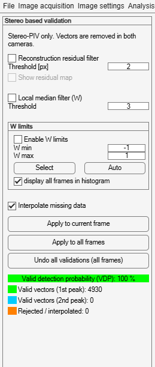

Stereo-based validation
Filters that only exist in Stereo-PIV. They test the 3D result; a rejected vector is removed in both cameras.
Open via Validation → Stereo based validation (Ctrl+Shift+J). All filters are off by default.

| Filter | Parameter | Removes vectors where… |
|---|---|---|
| Reconstruction residual filter | Threshold in px (default 2) | the two cameras do not fit one 3D velocity, e.g. where one camera sees dirt on a window or an object. |
| Local median filter (W) | Threshold (default 3) | w differs from the median of its neighbours (normalized median test). Catches w outliers that the residual cannot show: an error of one camera along the line between the cameras only changes w. |
| W limits | W min / W max (default −1 / 1) | w is outside this range, in the units of the velocity limits. |
Selecting the W limits
Select opens a histogram of w with the current W min / W max as a green range. Drag the range or its edges: W min and W max follow and Enable W limits is ticked. Bars outside the range turn red. Auto sets the range to the main peak of the histogram first. display all frames in histogram uses w of all frames instead of the current frame.
Residual map
Tick Show residual map to see the reconstruction residual of the frame shown. The colour scale ends at the threshold; the vectors above it, which the filter removes, are shown in a solid colour named below the image.
Applying, undoing, and reading the result
These work as in velocity-based validation. Apply runs the filters of all three validation panels; Interpolate missing data is the same setting in all three.
From the command line: Stereo-PIV options of
pivlab.filter.